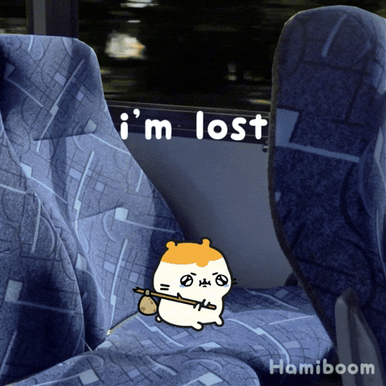
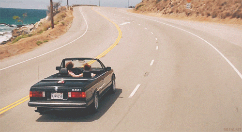
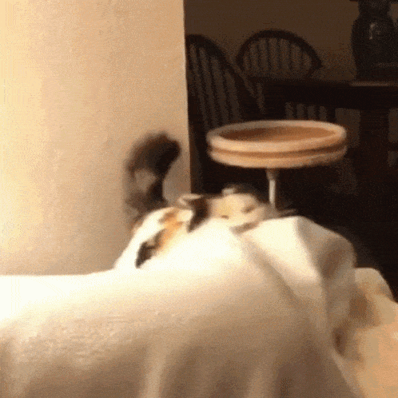

Like Herding Cats







- My friends and I found a cat all alone in a park.
- The cat was friendly, but it had no identification.
- We drove the cat to a vet clinic to find its owner.
- When we opened the car door, it clawed me so it could escape and ran away.
- We chased it around the clinic's parking lot for a while, with no success.
- We had to call the clinic staff for help catching it, and they were able to grab it.